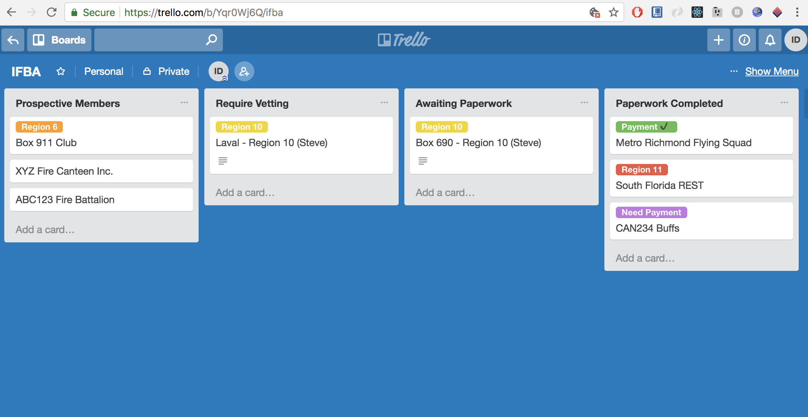

Internal Technology Briefing
June 2018
use right arrow to advance >>>
Compile a list of areas in which technology is used, and could be used, in the IFBA.
Organize the list in areas of importance.
The bulk of our technological efforts should be focused on growth/awareness to strengthen our organisation & hobby.
We also know of many digital marketplaces frequented by buffs (e.g. social media sites, forums, apps) that can be leveraged for this purpose.
The popularity of firematic & buff-related content on these digital platforms illustrates the broad appeal that our hobby continues to enjoy.
In our digital era, people increasingly expect near instantaneous communication & responsiveness.
Presently, applicants can wait up to 11 months to be voted in at our AGM. What initial impression might this send?
Can we improve the "customer experience" of applying for IFBA membership by incorporating new digital tools?
Stakeholders can view & update the status of each card at any given point in time.
Electronic payment of annual dues is a perfect example of a digital enhancement we've introduced.
Going forward, we should encourage electronic payments for annual convention registration.
Websites & email have become the de facto means of disseminating & sharing all convention-related information.
Therefore, it is essential that all host clubs maintain an active online presence leading up to our annual convention.
Having a central, organized, & accessible repository of files (Constitution/Bylaws) would allow everyone to be on the same page re: latest changes to approved documents.
This includes:
Entirely electronic production & distribution.
Producing Turn-Out with modern, up-to-date desktop publishing software enhances our ability to obtain outside help & expertise when required.
Indy Publishing Group continues to do a phenominal job 👏
Technology could be utilized to allow proxy voting.
Video conferencing tools could enhance our communication outside of our regular Spring & convention-time meetings.
Officer reports, proposed amendments, & minutes are presently distributed via email.
We could examine improving the accessibility of meeting documents (see document control).
Let's drive the productivity of our meetings, events & exchange of ideas by leveraging modern technology.
A curated list of productivity tools could help those less technically-inclined. For example:
Ian Duke
ian.c.duke@gmail.com
Comments & Feedback welcome